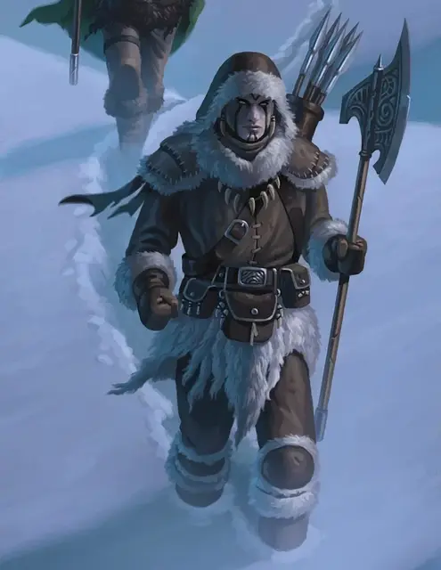

Голиаф-воин
Goliath Warrior
Средний Гуманоид (Голиаф), любое мировоззрение

Класс Доспеха 12 (шкурный доспех)
Хиты 67 (9к8 + 27)
Скорость 30 футов
| мод | спас | ||
|---|---|---|---|
| СИЛ | 18 | +4 | +4 |
| ЛОВ | 11 | +0 | +0 |
| ТЕЛ | 16 | +3 | +3 |
| мод | спас | ||
|---|---|---|---|
| ИНТ | 10 | +0 | +0 |
| МДР | 15 | +2 | +2 |
| ХАР | 10 | +0 | +0 |
Навыки Атлетика +6, Восприятие +4, Выживание +4
Сопротивление урону холод
Чувства пассивное Восприятие 14
Языки Общий, Великаний
Опасность 3 (700 опыта)
Бонус мастерства +2
Особенности
Рождённый в горах. Голиаф привычен к большим высотам, включая высоту более 20 000 футов над уровнем моря.
Мощное телосложение. Голиаф считается на один размер больше когда определяется его грузоподъемность и вес, который он может толкать, тянуть и поднимать с земли.
Действия
Мультиатака. Голиаф совершает две атаки Секирой или бросает два Метательных копья.
Секира. . Рукопашная атака оружием: +6 к попаданию, досягаемость 5 футов, одна цель. Попадание: 10 (1к12 + 4) рубящего урона.
Метательное копьё. Рукопашная и дальнобойная атака оружием: +6 к попаданию, досягаемость 5 футов, или дистанция 30/120 футов, одна цель. Попадание: 7 (1к6 + 4) колющего урона.
Реакции
Выносливость камня (перезаряжается после короткого или продолжительного отдыха). Когда голиаф получает урон, он может снизить его на 9 (1к12 + 3).
Описание
Храбрость населяющих Хребет Мира голиафов постоянно проверяется в борьбе с орками, ограми, ледяными великанами, реморазами, ледяными троллями, молодыми белыми драконами, коварной горной местностью и жестоким безразличием природы .
Непримиримые соперники. Приют Небесной Башни и Утес Змея Погибели — это две населенные голиафами горные крепости . Одна принадлежит клану Небесной Башни (Аканнаси), вторая клану Змея Погибели (Туунлакалага) . Эти два клана не могут поладить между собой, и между ними проходит напряженная, нередко доходящая до жестокости борьба . Наблюдая за соперниками через горные вершины они оспаривают друг у друга всё, от предметов первой необходимости до близлежащих территорий . Вероятность мира между ними крайне мала, так как голиафы любят держать обиду.